地政学
重慶は長江上流で嘉陵江を受ける内陸の要衝で、四川盆地、三峡、華中、沿海市場をつなぐ都市です。直轄市として西部開発の政治拠点でもあり、川、山、鉄道、高速道路が国家の内陸戦略を支えます。川が内陸を開きます。

🇨🇳 中国 / 重慶直轄市 / World City Atlas
長江と嘉陵江が合流する山の大都市です。立体的な街路、内陸の工業と物流、火鍋の食文化、戦時首都の記憶、移住労働、農村を含む巨大な行政域、霧と蒸し暑さ、夜景観光が重なります。
都市の骨格
重慶は、都心だけでなく広大な農村、峡谷、工業団地、港湾、鉄道結節を含む直轄市です。川の合流点に立つ高密度な中心市街地と、周辺の山地・郊外・県域を合わせて読む必要があります。
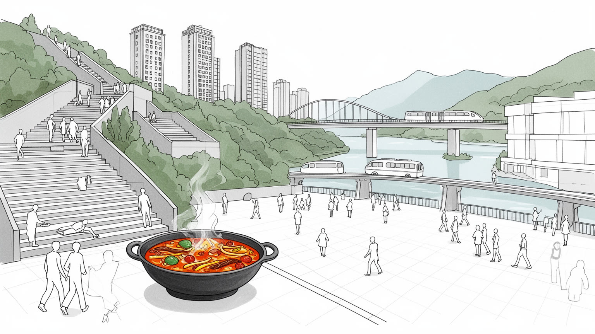
重慶は長江上流で嘉陵江を受ける内陸の要衝で、四川盆地、三峡、華中、沿海市場をつなぐ都市です。直轄市として西部開発の政治拠点でもあり、川、山、鉄道、高速道路が国家の内陸戦略を支えます。川が内陸を開きます。
自動車、電子、装備製造、物流、建設、飲食、観光が雇用を厚くします。山地の中心部と郊外工業団地、農村出身の働き手、大学卒の技術者が交わり、内陸市場の生産と消費を動かす街です。工場と倉庫も増えています。
火鍋、川劇、寺院、移民の記憶、抗戦期の首都経験が、重慶の文化を熱く重層的にします。道教や仏教の場、街角の茶館、夜市、家族の食卓が、山河の都市に日常の祈りと活気を残しています。熱い食卓と茶館が街を結びます。
旅行者は夜景、洪崖洞、軽軌、火鍋、三峡方面を楽しみますが、住民は坂道通勤、湿った酷暑、住宅費、洪水、親族の移動と向き合います。観光の華やかさの奥に、山の生活都市が続いています。坂の移動も暮らしの条件です。
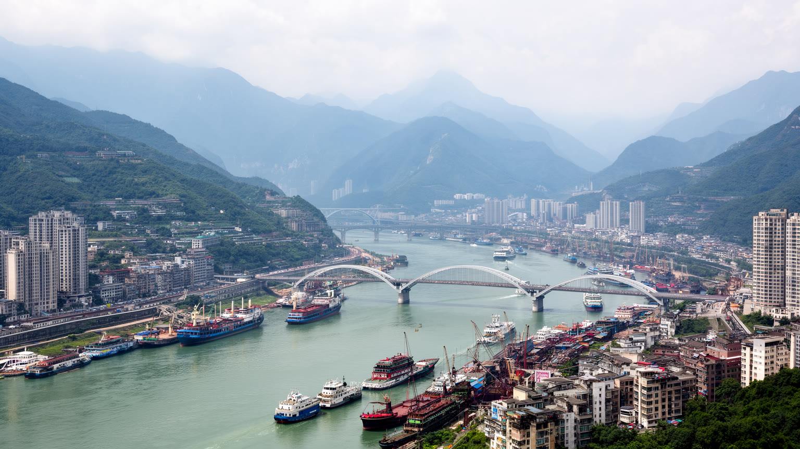
重慶を読む入口は、長江と嘉陵江が合流する山の突端です。朝天門周辺では二つの水が市街地を挟み込み、橋、埠頭、トンネル、高層住宅、商業地が斜面に張りつきます。川は美しい背景ではなく、物資、軍事、洪水、移民、観光を運んできた都市の動脈です。長江を下れば三峡を経て武漢、南京、上海方面へつながり、上流へ向かえば四川盆地や西南中国の市場に入ります。嘉陵江は北側の内陸交通を引き込み、合流点の地形は重慶を港と要塞と商都にしました。河岸の再開発は遊歩道や夜景を整える一方、古い埠頭労働、低地の住宅、増水期の危険を見えにくくします。川沿いを歩くと、観光船の明かりと貨物の岸壁、古い階段と新しいタワーが同じ水面を共有していることが分かります。重慶の地政学は、沿海から遠い弱さではなく、長江上流を押さえる内陸の重さとして理解できます。水位の変化、橋の混雑、港湾の移転、河岸の防災は、都市の成長を静かに左右します。合流点を眺めることは、重慶が山の上にあるだけでなく、川によって中国の広い経済圏へ開かれていることを確かめる行為です。河岸の階段や古い倉庫には、船で来た商人、担ぎ屋、移住者の記憶も残ります。解放碑や朝天門の市場へ運ばれる野菜、魚、香辛料の流れを重ねると、川は観光資源である前に都市の胃袋と時間を動かしてきたことが分かります。水面は街の記憶を映します。
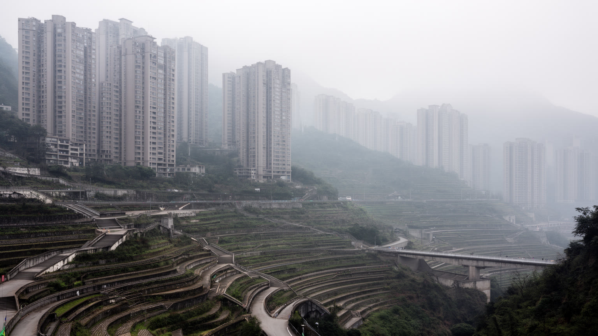
重慶の都市空間は、平らな地図では理解しにくいです。丘陵と谷が連続する市街地では、一階だと思った通りが別の建物の十階に接続し、橋の下に道路が走り、階段とエスカレーターが生活の近道になります。山地都市であることは、景観の個性であると同時に、通勤、消防、物流、バリアフリー、住宅価格を左右する条件です。高層住宅は斜面の限られた土地を利用し、商業施設は複数の出入口を高さごとに持ち、軌道交通は谷をまたいで突然ビルの間を抜けます。観光客には立体的な都市が驚きとして映りますが、住民には買物帰りの上り坂、雨の日の滑りやすい階段、子どもの通学、高齢者の移動、宅配員の負担として現れます。駅の接近音、ブレーキ音、坂道を上がるバイクの響きも、地形を感じる日常の音です。山は都市にドラマを与える一方、公共空間を細切れにし、歩行者が遠回りを強いられる場所も生みます。重慶の都市計画は、斜面を削って平地化するだけではなく、既存の高低差をどう公共交通、緑、広場、避難路として使うかが問われます。夜の高層群が美しく見えるのは、山の斜面が光を重ねるからです。その光の背後には、毎日高さを移動する身体と、複雑な地形に合わせて暮らしを組み立てる住民の知恵があります。重慶は、都市の立体性が観光資源である前に生活条件であることを教えます。地形に慣れた人は、近道の階段、建物内の通路、乗り継ぎやすい駅を身体で覚えています。外から来た人が迷う複雑さこそ、住民には都市を使いこなす技術になっています。
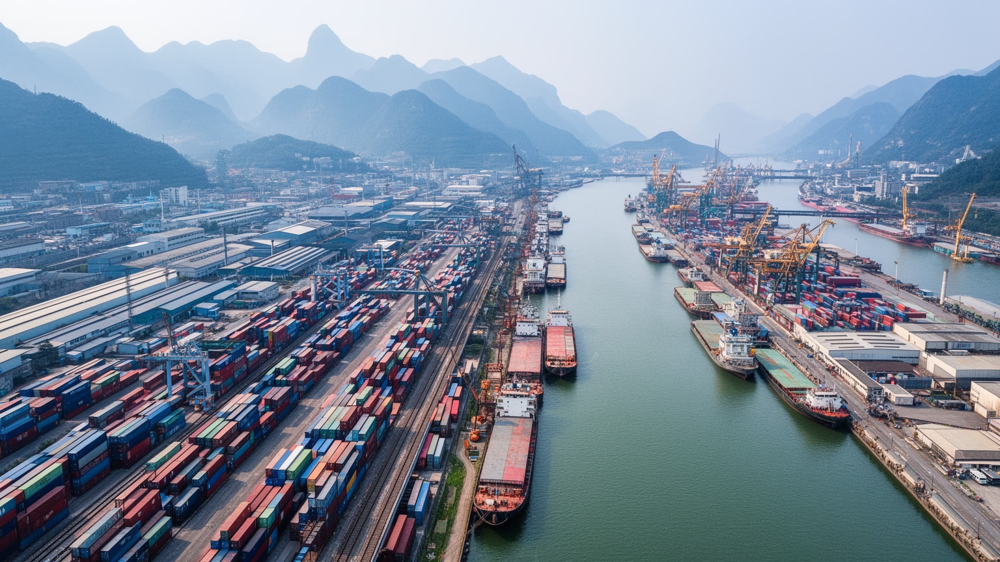
重慶の経済は、観光の印象よりもはるかに工業的です。自動車、オートバイ、電子機器、装備製造、材料、ソフトウェア、金融、物流が都市圏の雇用を支え、郊外の工業団地と都心の業務地区を結びつけます。内陸に位置するため、沿海都市のように海港へ直接出られるわけではありませんが、長江水運、鉄道貨物、高速道路、国際貨物列車を組み合わせ、欧州や東南アジア、華東市場へ接続する回廊を作ってきました。工場の生産は部品会社、倉庫、検査、通関、配送、食堂、寮、清掃まで含む多くの仕事に支えられます。大学卒の技術者と農村部から来る若い労働者、地元の中小企業、外資系や沿海から移った企業が同じサプライチェーンに入るため、景気変動や輸出環境は家計に直結します。短動画の販売、地域メディアの取材、ライブコマースも市場や観光地の小さな商いを広げます。重慶の産業政策は西部開発、内陸開放、デジタル化の象徴として語られますが、現場では賃金、長時間労働、技能形成、寮生活、環境負荷が現実の課題になります。貨物駅や工業団地を見れば、この都市が山水の観光地であるだけでなく、中国内陸の生産と消費を束ねる実務都市であることが分かります。川と鉄道を使いこなす力が、重慶の内陸性を弱点から戦略的な位置へ変えています。産業の強さは都心の高層ビルではなく、郊外の搬入口、夜間のトラック、部品を待つラインにも表れます。内陸で競争するには、輸送時間を読み、在庫を管理し、働く人が定着できる生活環境を整えることが欠かせません。
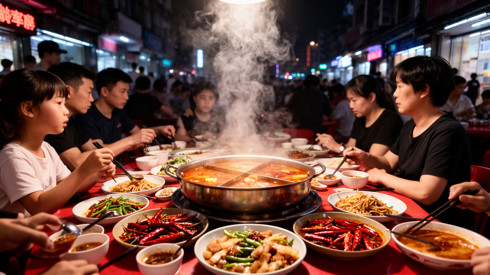
重慶の食文化を語るとき、火鍋は欠かせません。牛脂、唐辛子、花椒、内臓、薄切り肉、野菜、麺が赤い鍋の中で煮え、家族、同僚、友人、旅行者が同じ湯気を囲みます。辛さは単なる刺激ではなく、湿った気候、山の労働、移民都市の活気、長い夜の社交と結びついた生活の味です。火鍋店は高級店から路地の小さな店まで幅広く、厨房の仕込み、油の管理、食材の配送、深夜の片づけ、若い店員の接客が都市の飲食労働を支えます。観光地では火鍋が消費しやすい記号になりがちですが、住民にとっては誕生日、職場の打ち上げ、帰省、普段の夕食をつなぐ場でもあります。小面、串串、豆花、川江料理、茶館の時間も、重慶の食を厚くします。夜市では唐辛子油の匂い、鉄板の音、湿った川風、果物を並べる露店が買い物の感覚を作ります。辛い味は人を集めますが、同時に価格競争、衛生管理、長時間営業、観光化による家賃上昇も店を圧迫します。火鍋の鍋を囲むと、重慶が荒々しい山の街というだけでなく、食卓で人間関係を整える社交の都市であることが見えてきます。湯気の向こうには、移住者が自分の居場所を作り、地元の人が街の変化を語り合う公共性があります。重慶の辛さは、街を誇示するためではなく、湿った夜に身体と会話を温める日常の技術です。火鍋の店先では、順番を待つ人、鍋底を運ぶ人、皿を洗う人、家族の席を確保する人が同じ熱気に包まれます。その雑多な近さが、都市の親密さを作ります。
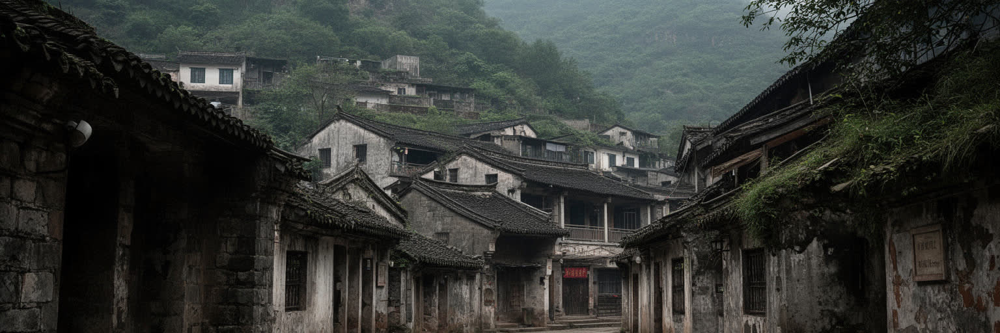
重慶には、日中戦争期に国民政府の陪都として機能した重い記憶があります。沿海部や南京から政治機関、学校、工場、文化人、避難民が移り、山の都市は空襲に耐えながら戦時中国の中心の一つになりました。防空壕、旧跡、博物館、記念碑は、その時代の都市が単なる後方ではなく、政治、外交、宣伝、産業移転、民衆の避難を引き受けた場所だったことを伝えます。空襲の記憶は、都市の誇りだけでなく、恐怖、火災、地下への避難、家族の喪失、物資不足を含みます。現在の重慶は高層ビルと観光で明るく見えますが、斜面の下や古い街路には戦時の時間が薄く残っています。歴史を扱うときは、国家的な物語だけでなく、住民がどのように空襲警報を聞き、狭い壕へ入り、親族を失い、暮らしを続けたのかを考える必要があります。重慶大学や西南大学などの教育機関を含む学びの集積も、戦時の移動と再建の経験から切り離せません。山地の防御性、長江上流の位置、内陸への産業移転は、地理が歴史を左右することを示しました。観光客が夜景に見とれる同じ都市で、かつて人びとは灯火を消し、爆撃を避け、明日の食糧を探していました。その落差を知ると、重慶の力強い現在は、忘却ではなく、生き残りの記憶の上に築かれていることが分かります。記念施設を歩く時間は、都市の成長を誇る時間とは違う速度を求めます。静かな展示や壕の暗さに触れると、現在のにぎわいが偶然ではなく、多くの中断と再建をくぐって続いた生活の結果だと感じられます。
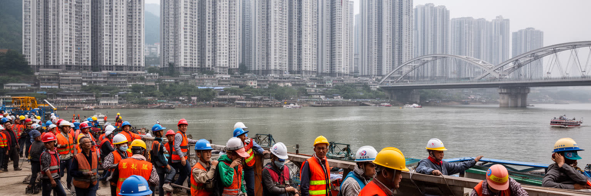
重慶は一つの都市でありながら、広大な農村、山地の県域、郊外工業地帯、中心市街地を含む巨大な行政単位でもあります。そのため、都市の労働を考えるには、外から来る移住者だけでなく、市内の農村部から都心や工業団地へ移る人びとの流れを見る必要があります。建設現場、工場、物流倉庫、飲食店、ホテル、家事サービス、配達、観光業は、若い労働者や中高年の再就職、家族を残して働く人に支えられます。沿海部へ出稼ぎに行った経験を持つ人が地元へ戻り、重慶で仕事を選ぶケースも多いです。都市化は収入機会を増やす一方、戸籍、教育、医療、住宅、社会保険、親の介護をめぐる不平等を残します。山地の出身地と都心の職場を行き来する生活では、春節や家族行事、子どもの進学、農地の維持が大きな意味を持ちます。重慶の華やかな中心部は、こうした移動する身体によって清掃され、建てられ、調理され、運ばれています。都市の成長を数字だけで見ると、労働の不安定さや家族の分離は見えにくいです。駅の混雑、工業団地の寮、夜遅い飲食店、坂道を走る配達員、屋台で朝食を売る人を見れば、重慶が移住労働と路上経済の都市であることが分かります。内陸大都市としての重慶の成熟は、働く人が単に使われるだけでなく、住み、学び、家族を支えられる都市になれるかにかかっています。子どもを故郷に残す家庭、親を呼び寄せる家庭、夫婦で交代勤務を続ける家庭の選択は、統計に出にくい現実です。
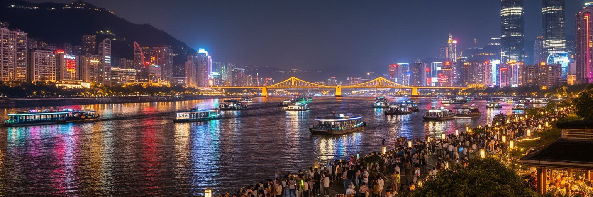
重慶観光の強い印象は、両江の夜景と立体的な都市の驚きです。洪崖洞、解放碑、朝天門、観音橋、橋梁群、観光船、川岸の遊歩道、軌道交通の車窓は、山の斜面に積み上がる光を見せ、旅行者に一度で覚えられる都市像を与えます。夜景は重慶の地形を分かりやすく示す一方、観光化された光は生活の複雑さを隠すこともあります。洪崖洞周辺の混雑、写真撮影の列、交通規制、飲食店の家賃、住民の騒音負担は、人気観光地が抱える現実です。観光業はホテル、飲食、土産、交通、清掃、警備、配信、ガイドの雇用を生みますが、短期的な流行に依存すれば、古い街区や日常の商店は急速に変わります。重慶の観光の魅力は、作られたテーマパーク性だけではなく、実際の地形と生活がすでに劇的である点にあります。坂を上がり、橋を渡り、川風を受け、火鍋の匂いの中を歩くと、都市そのものが舞台になっていることが分かります。ライブハウスや川辺の歌声、夜市の呼び込み、短動画を撮る若者も、夜の重慶を更新しています。だからこそ、夜景を楽しむには、そこに住む人の通勤路や生活空間を尊重する視点が必要になります。光が都市を美しく見せるほど、その下で働く人、眠る人、移動する人の時間も同時に見なければなりません。重慶の夜景は、消費される眺めであると同時に、山河の生活が夜まで続く証拠です。写真映えする場所を離れても、小さな食堂、坂の住宅、川沿いの釣り人、帰宅する学生の姿があり、観光の都市像を日常へ引き戻してくれます。
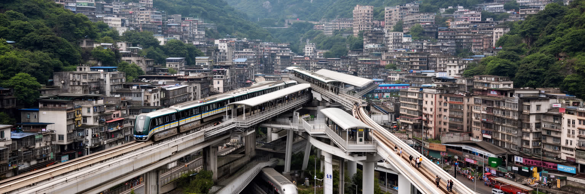
重慶の軌道交通は、山地都市の移動を大きく変えました。地下鉄、モノレール、高架線、長いエスカレーター、橋梁、トンネルが組み合わさり、川と谷で分断されやすい地区を日常の通勤圏へ引き寄せます。特に高架の車両がビルの間を抜ける風景は観光的にも有名ですが、重要なのはその珍しさではなく、複雑な地形で大量輸送を成立させている点です。朝夕の駅には会社員、学生、工場勤務者、観光客、配達員が集まり、路線の接続は住宅地の価値や商業の場所を変えます。軌道交通が整うほど、車に頼らない移動は増えますが、駅までの坂道、乗り換えの長さ、混雑、郊外部のラストワンマイルは残ります。山地では平地都市以上に、駅の高さ、出口の位置、歩道橋、エレベーターが住みやすさを左右します。交通インフラは都市を便利にするだけでなく、新しい開発を呼び込み、古い地区の家賃や人の流れを変える力も持ちます。重慶の軌道交通を読むと、都市が地形に屈するのではなく、地形に合わせて独自の移動体系を作ってきたことが分かります。車窓から見える川、斜面、住宅、橋、駅前の朝市は、観光写真の背景ではなく、毎日の移動が都市理解そのものになる場所です。重慶では、交通を使うことが立体都市を読む最も身近な方法になっています。駅の出口を一つ間違えるだけで高さも街区も変わるため、案内表示やエレベーターの整備は観光客だけでなく高齢者と子ども連れにも重要です。発車ベルと車輪音が谷に響くたび、移動の設計が生活の公平さを決めることが分かります。
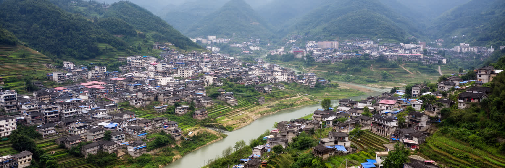
重慶を都心の高層ビルだけで語ると、直轄市の本質を見落とします。行政域は約八万二千平方キロに及び、中心部の市街地、郊外区、山地の県、三峡周辺の小都市、農村、河谷の集落を含みます。つまり重慶は一つの巨大都市であると同時に、都市と農村の関係を抱えた広域地域でもあります。農村部では柑橘、野菜、畜産、茶、観光、出稼ぎ送金が生活を支え、若者の流出、高齢化、学校や医療への距離、山地道路の維持が課題になります。春節や廟会の時期には、帰省した家族、露店、子どもの遊び、獅子舞や龍舞が村と小都市を再び結びます。三峡ダム建設に伴う移転や河岸の変化は、住民の記憶と土地感覚に深く関わります。中心部の消費や工業は、農村からの労働力、食材、水、土地、観光資源に支えられており、都市の繁栄と後背地の負担は切り離せません。高速道路や鉄道が山間部を近づけても、日常の医療、教育、雇用の差は簡単には消えません。重慶の政策的な重みは、この都市農村の接続を直轄市の枠内で扱える点にあります。山村の朝市、小都市のバスターミナル、都心へ働きに出る家族を見れば、重慶が単なるメガシティではなく、広い内陸社会を代表する場所であることが分かります。都心の夜景を支える背景には、山地の暮らし、農地、移動する家族の時間があります。その全体を見て初めて、重慶の大きさは人口や面積の数字を超えて理解できます。農村の高齢者が孫の世話をし、若者が都心や沿海で働き、収入が村へ戻る循環は、直轄市の内部で起きる都市化の姿です。
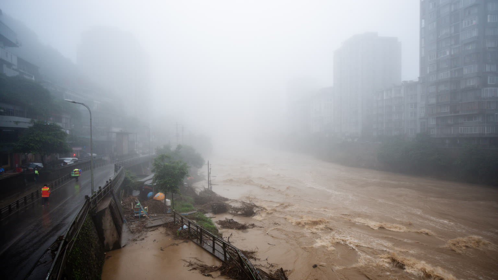
重慶の気候は、霧の多さ、湿った暑さ、雨、川の水位変化によって強く特徴づけられます。四川盆地の地形は空気を滞留させやすく、夏は蒸し暑さが厳しく、屋外労働、通学、高齢者の生活、観光の歩行に負担をかけます。冬は日照が少なく湿った寒さが残り、坂道と階段の多い街では雨の日の移動も楽ではありません。霧で輪郭のにじむ高層住宅、濡れた石段、唐辛子油の香り、川の湿気は、重慶を身体で覚えさせます。長江と嘉陵江の合流点にあるため、増水期には河岸の浸水、地下空間、低地の商業、港湾、交通への影響が課題になります。山地では斜面崩壊、排水、擁壁、トンネル、橋の維持も重要で、気候リスクは川沿いだけに限られません。気候変動で豪雨や高温が強まれば、古い住宅、建設現場、配達員、低所得世帯、農村部の高齢者ほど影響を受けやすいです。重慶の都市計画には、日陰、避暑空間、冷房負荷、緑地、排水施設、避難情報、外国人や観光客への案内まで含めた備えが必要です。霧に包まれる景観は魅力的ですが、その湿り気は身体とインフラに具体的な負担を与えます。川の水面が穏やかに見える日でも、都市は上流の雨、ダムの運用、岸辺の安全を気にしながら暮らしています。重慶の強さは、山河の美しさを楽しみながら、その危険を日常の制度に変えられるかにかかっています。学校の休校判断、工事現場の熱中症対策、地下商業の排水、観光船の運航管理は別々の話ではありません。気候を都市全体の運用として考えることが、大都市を守る基本になります。
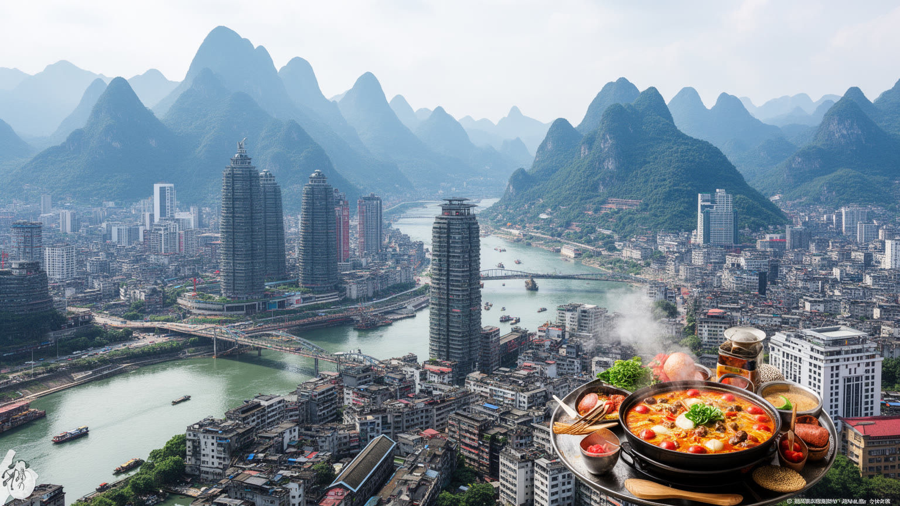
重慶を一つの言葉で語れば、山河の巨大都市です。長江と嘉陵江の合流、急斜面に重なる高層住宅、橋とトンネル、火鍋の湯気、戦時首都の記憶、内陸工業と物流、軌道交通、夜景観光、広大な農村後背地が、同じ直轄市の中に収まります。沿海の国際都市とは違い、重慶の力は内陸の広さと地形の複雑さを引き受けるところにあります。都心を歩けば、観光客向けの強いイメージが次々に現れますが、その背後には工場へ向かう通勤、山村からの移動、低地の洪水対策、古い埠頭の記憶、家族を囲む食卓があります。Chongqing Tonglianglongのサッカー、公園の卓球やバスケットボールも地域の熱です。都市の魅力は、夜景や交通だけでは完結しません。川の位置、山の高さ、労働の流れ、農村とのつながりを重ねて見ると、重慶が中国西部の社会を代表する厚い都市であることが見えてきます。急速な開発は新しい仕事と便利さを生む一方、住宅費、観光化、環境負荷、労働の不安定さ、地域格差も広げます。重慶を読むには、坂を上り、軌道交通に乗り、川岸を歩き、火鍋店や商場、市場、郊外へ向かう視線が必要です。立体的な都市とは、建物が高いという意味だけではありません。地形、歴史、産業、家族の移動が何層にも重なり、見る場所によって別の重慶が現れるということです。だから重慶の面白さは、一枚の夜景写真ではなく、上流と下流、都心と農村、観光と労働を結び直す読み方の中にあります。山と川が都市を分けるほど、人びとは橋、鍋、鉄道、記憶で結び直してきました。